还记得面试现场第一篇文章【面试现场】如何判断一个数是否在40亿个整数中？发出之后，最后蛋哥说把40亿个数先进行外部排序。有读者问到，内存无法一次性加载40亿个数，如何排序？
西天取经的路上，一样上演着编程的乐趣.....
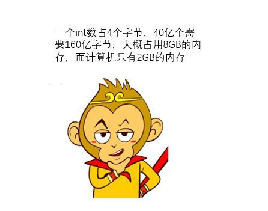
(互联网侦察注：160亿字节大概是16G吧，20亿int32大概8G)
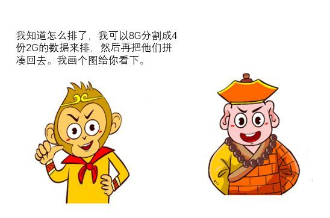
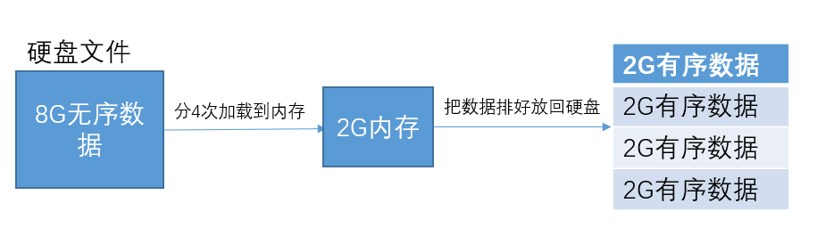
置换选择
例如我们可以从12个数据读取3个存到内存中，然后从内存中选出最小的那个数放进子串p1里；
之后再从在从剩余的9个数据读取一个放到内存中，然后再从内存中选出一个数放进子串p1里，这个数必须满足比p1中的其他数大，且在内存中尽量小。
这样一直重复，直到内存中的数都比p1中的数小，这时p1子串存放结束，继续来p2子串的存放。例如(这时假设内存只能存放3个int型数据)：
12个无序的int数据
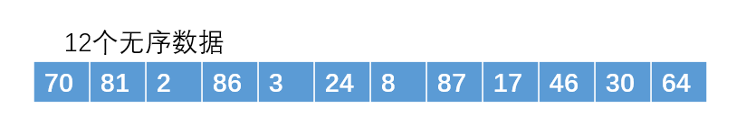
读入3个到内存中，且选出一个最小的到子串p1
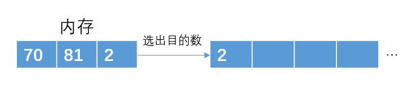
从内存中再次读取一个元素86
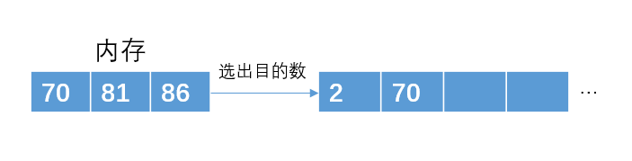
从内存中再次读取一个元素3
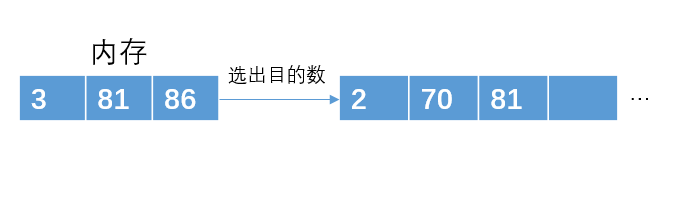
从内存中再次读取一个元素24
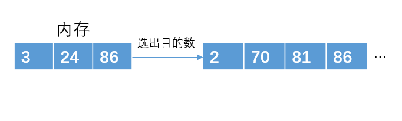
从内存中再次读取一个元素8
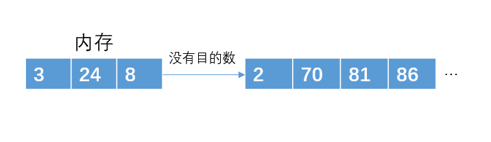
这个时候，已经没有符合要求的数了，且内存已满，进而用p2子串来存放，以此类推。
通过这种方法，p1子串存放了4个数据，而原来的那种方法p1子串只能存放3个数据。
(不知道堆排序的可以看下我之前写的文章：【算法与数据结构】堆排序是什么鬼？)
从12个数据中读取3个数据，构建成一个最小堆，然后从堆顶选择一个数写入到p1中。
之后再从剩余的9个数中读取一个数，如果这个数比刚才那个写入到p1中的数大，则把这个数插入到最小堆中，重新调整最小堆结构，然后在堆顶选一个数写入到p1中。
否则，把这个数暂放在一边，暂时不处理。之后一样需要调整堆结构，从堆顶选择一个数写入到p1中。
这里说明一下，那个被放在一边的数是不能再放入p1中的了，因为它一定比p1中的数都要小，所以它会放在下一个子串中
看这些文字会让人头大，我画图解释下吧。
从12数据读取3个数据
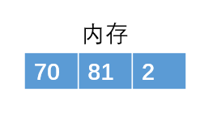
构建最小堆，且选出目标数
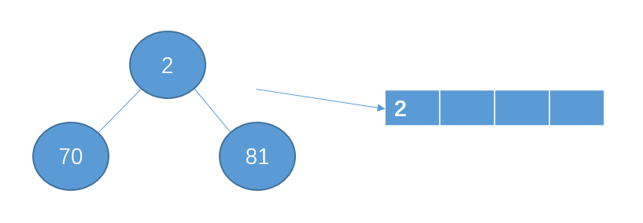
读入下一个数86
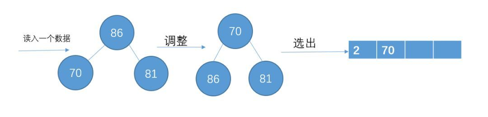
读入下一个数3，比70小，暂放一边，不加入堆结构中
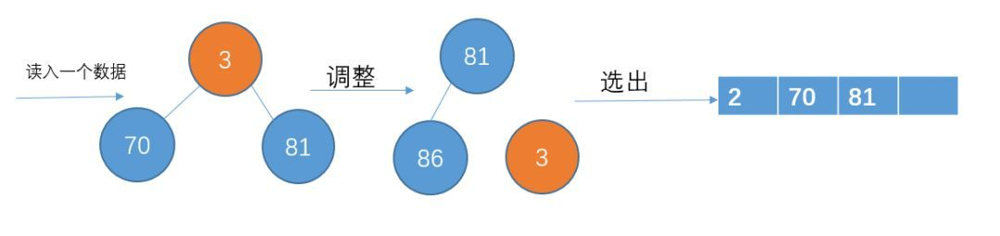
读入下一个数据24，比81小，不加入堆结构
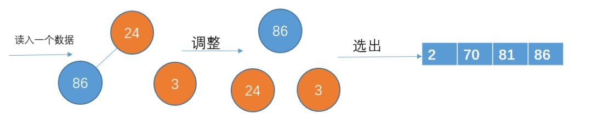
读入下一个数据8，比86小，不加入堆结构。此时p1已经完成了，把那些刚才暂放一边的数重新构成一个堆，继续p2的存放。
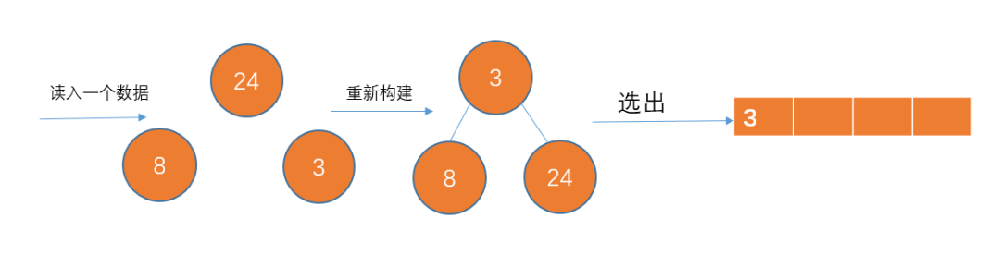
以此类推...
最后生成的p2如下：
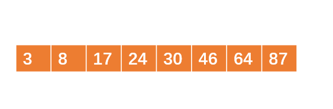
这种方法适合要排序的数据太多，以至于内存一次性装载不下。只能通过把数据分几次的方式来排序，我们也把这种方法称之为外部排序